Projet d'imagerie aérienne en Abitibi

Marque en développement centrée sur l'imagerie aérienne et la cartographie par drone en Abitibi-Témiscamingue.
Drone Abitibi est un projet d'entreprise en phase de préparation. Le volet opérationnel
d'imagerie aérienne est actuellement offert à titre de travailleur autonome
sous la bannière DV Drone - Imagerie aérienne.
Réseaux sociaux
Ressources du site
Pour toute
demande de services professionnels (photos/vidéos aériennes,
orthomosaïques, suivi de chantier, etc.), veuillez vous adresser à :
DV Drone - Imagerie aérienne
Drone Abitibi évoluera progressivement vers une structure d'entreprise distincte. Cette
page sert pour l'instant de point de contact et de vitrine du projet.